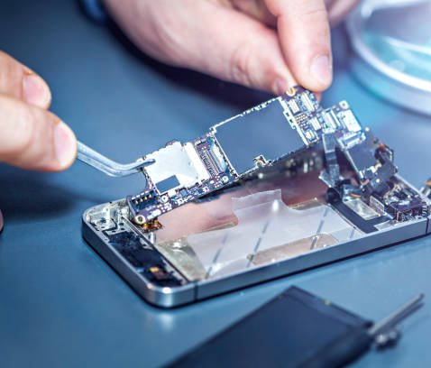
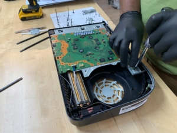

Repair Services
Our technicians perform diagnostics first to assess device condition before any repair is completed. Parts used may vary based on availability and customer preference, and repair outcomes may depend on the condition of the device.

Phone & Tablet Repair
Screen damage, battery replacement, charging issues, software troubleshooting and general diagnostics.

Laptop & Computer Repair
Performance issues, hardware diagnostics, upgrades and common repair services.

Game Console Repair
Performance issues, overheating diagnostics and controller repair services.